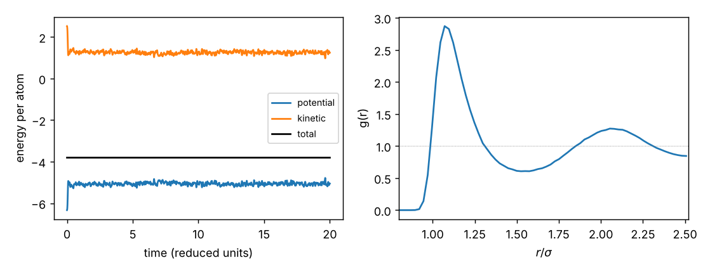

Curriculum/ComputingCOMP 102
Your first simulation
The labs of this curriculum use professional simulation codes (LAMMPS, FiPy, PySCF, phonopy). Before you use them as black boxes, you should write a simulation yourself, however small. A molecular-dynamics program of $80$ lines in NumPy contains every idea of LAMMPS except speed: initial conditions, forces, a time integrator, periodic boundaries, thermodynamic averages and error bars. Writing it teaches you what the keywords of the input files mean, which errors to expect, and how to tell a correct run from an incorrect one. Everything in this unit was run; the programs are in the repository (labs/comp-102).
- Reading time
- about 46 min
- Leads to
- —
- Level
- Year 1: foundations
- Describe a simulation as a chain from model to result and distinguish verification from validation.
- Integrate ordinary differential equations with Euler, symplectic Euler and velocity Verlet, and measure their order and stability.
- Write a molecular-dynamics program for a Lennard-Jones fluid and explain each of its parts.
- Compute temperature, pressure, radial distribution function and diffusion coefficient from a trajectory, with error bars.
- Implement the Metropolis Monte Carlo algorithm and choose its step size.
- Check a simulation: conservation laws, convergence with time step and system size, comparison with exact results.
- Explain what changes when moving from a toy program to a production code.
Seven lectures with programs that you should type and run; a problem set of twelve problems with hints and full solutions; a unit quiz. All timings were measured on a laptop-class core with Python 3.13 and NumPy 2.5; yours will differ but the conclusions will not.
Lecture 1. What is a simulation?#
A simulation is the numerical solution of a mathematical model, used to predict or understand a system. It has four layers, each with its own errors:
- The physical model: which degrees of freedom and which laws (Newton’s equations with a Lennard-Jones potential for argon; the Ising Hamiltonian for a ferromagnet). Errors: the model is only an approximation of reality.
- The algorithm: how the model is solved (a time-stepping integrator, a random-sampling scheme). Errors: discretisation (time step, mesh) and statistical (finite sampling).
- The program: the implementation. Errors: bugs, rounding, wrong units.
- The analysis: how results are extracted (averages, fits). Errors: wrong estimators, correlated samples treated as independent.
Verification asks “am I solving the equations right?”: it tests the algorithm and the program against exact solutions, conservation laws and convergence with the numerical parameters. Validation asks “am I solving the right equations?”: it compares the model’s predictions with experiment or with a more accurate theory. Both are needed and they must not be confused: a perfectly verified simulation of a poor model gives precisely wrong answers; a lucky agreement with experiment from a buggy program is worse. Each lab of this curriculum does both: the lattice constant and elastic constants of copper from the EAM potential are compared with measured values (validation), and the energy conservation and the convergence of the results with the box size and time step are checked (verification).
A first simulation: Newton’s law of cooling
A cup of coffee at $90{}^\circ$C in a room at $20{}^\circ$C cools at a rate proportional to the temperature difference, $\mathrm dT/\mathrm dt=-k(T-T_a)$ with $k=0.1$ min$^{-1}$. This equation can be solved exactly ($T=T_a+(T_0-T_a)e^{-kt}$, MATH 203), which makes it ideal for verifying a method. The simplest numerical method, the explicit Euler method, replaces the derivative by a finite difference over a time step $\Delta t$ and steps forward: $T_{n+1}=T_n+\Delta t\,f(T_n)$ where $f=-k(T-T_a)$. It is the first term of a Taylor series, so each step makes an error $O(\Delta t^2)$ and the error accumulated over $t/\Delta t$ steps is $O(\Delta t)$: the method is first order.
"""Newton's law of cooling dT/dt = -k (T - T_a): the explicit Euler method against the exact solution."""
import numpy as np
k, Ta, T0, t_end = 0.1, 20.0, 90.0, 30.0 # 1/min, deg C, deg C, min
exact = lambda t: Ta + (T0 - Ta) * np.exp(-k * t)
print(" dt (min) steps T(30 min) Euler exact error error/dt")
for dt in (5.0, 2.0, 1.0, 0.5, 0.1, 0.01):
n = int(round(t_end / dt)); T = T0
for _ in range(n): T += dt * (-k * (T - Ta))
print(" %6.2f %5d %9.4f %8.4f %9.5f %8.4f" % (dt, n, T, exact(t_end), T - exact(t_end), (T - exact(t_end)) / dt)) dt (min) steps T(30 min) Euler exact error error/dt
5.00 6 21.0938 23.4851 -2.39134 -0.4783
2.00 15 22.4629 23.4851 -1.02219 -0.5111
1.00 30 22.9674 23.4851 -0.51771 -0.5177
0.50 60 23.2249 23.4851 -0.26021 -0.5204
0.10 300 23.4329 23.4851 -0.05223 -0.5223
0.01 3000 23.4799 23.4851 -0.00523 -0.5227The error is proportional to the time step: dividing $\Delta t$ by $10$ divides the error by $10$, and the ratio error$/\Delta t$ converges to $-0.5227$. This is the signature of a first-order method and gives a way of verifying the code and of estimating the step needed for a given accuracy. The limit value can be derived: expanding $(1-k\Delta t)^{t/\Delta t}$ for small $\Delta t$ gives the error $-\tfrac12k^2\Delta t\,t\,e^{-kt}(T_0-T_a)=-\tfrac12(0.01)(30)e^{-3}(70)\,\Delta t=-0.5228\,\Delta t$, exactly what the program found. To lose no more than $0.05{}^\circ$C one needs $\Delta t\le0.1$ min here. And Euler is only conditionally stable: for $k\Delta t>2$ the numerical solution oscillates and grows even though the true one decays (Exercise 2).
Lecture 2. Integrating Newton’s equations#
For a particle of mass $m$ in a potential $U$, Newton’s equations are $\dot{\mathbf r}=\mathbf v$, $\dot{\mathbf v}=\mathbf F/m$. A good integrator for molecular dynamics must conserve energy over millions of steps (a bad one drifts), be cheap (the cost per step is dominated by the force evaluation, so one force calculation per step is desirable), and be stable at the largest possible time step. The test system is the harmonic oscillator $\ddot x=-x$ (unit mass and frequency) with $x(0)=1$, $v(0)=0$, exact solution $x=\cos t$ and conserved energy $E=\tfrac12(v^2+x^2)=\tfrac12$. Three methods:
- Explicit Euler: $x_{n+1}=x_n+\Delta t\,v_n$, $v_{n+1}=v_n-\Delta t\,x_n$ (both updates use the old values).
- Symplectic (semi-implicit) Euler: $v_{n+1}=v_n-\Delta t\,x_n$, then $x_{n+1}=x_n+\Delta t\,v_{n+1}$ (the new velocity is used in the position update).
- Velocity Verlet: $x_{n+1}=x_n+\Delta t\,v_n+\tfrac12\Delta t^2a_n$, $v_{n+1}=v_n+\tfrac12\Delta t(a_n+a_{n+1})$ with $a=F/m$ evaluated at the new position.
"""Harmonic oscillator x'' = -x: explicit Euler, symplectic Euler and velocity Verlet. Exact: x = cos t, E = 1/2."""
import numpy as np
def run(method, dt, t_end=100.0):
n = int(round(t_end / dt)); x, v = 1.0, 0.0
E = np.empty(n + 1); E[0] = 0.5
for i in range(n):
if method == "euler":
x, v = x + dt * v, v - dt * x
elif method == "symplectic":
v = v - dt * x; x = x + dt * v
else: # velocity Verlet
a = -x; x = x + dt * v + 0.5 * dt * dt * a; v = v + 0.5 * dt * (a + (-x))
E[i + 1] = 0.5 * (v * v + x * x)
return x, v, E, n * dt
print(" method dt steps x(100) exact cos(100) E(100) max |E - 1/2|")
for method in ("euler", "symplectic", "verlet"):
for dt in (0.1, 0.01):
x, v, E, t = run(method, dt)
print(" %-10s %5.2f %5d %8.4f %8.4f %9.5f %9.5f" % (method, dt, int(round(t / dt)), x, np.cos(t), E[-1], np.max(np.abs(E - 0.5)))) method dt steps x(100) exact cos(100) E(100) max |E - 1/2|
euler 0.10 1000 94.2012 0.8623 10479.57782 10479.07782
euler 0.01 10000 1.4189 0.8623 1.35907 0.85907
symplectic 0.10 1000 0.9062 0.8623 0.52132 0.02632
symplectic 0.01 10000 0.8651 0.8623 0.50219 0.00251
verlet 0.10 1000 0.8827 0.8623 0.49972 0.00125
verlet 0.01 10000 0.8625 0.8623 0.50000 0.00001The explicit Euler method is unconditionally unstable for oscillations: each step multiplies the amplitude by $\sqrt{1+\Delta t^2}$, so after $t=100$ the energy has grown by $(1+\Delta t^2)^{t/\Delta t}\approx e^{t\Delta t}$: from $0.5$ to $10\,480$ for $\Delta t=0.1$ and to $1.36$ for $\Delta t=0.01$ (a factor $e^{1}=2.7$, as predicted). Reducing the time step by ten only reduces the growth rate; it never removes it. The symplectic Euler method keeps the energy bounded (it oscillates around the right value; the error of $0.026$ at $\Delta t=0.1$ becomes $0.0025$ at $0.01$, first order). Velocity Verlet is both bounded and more accurate: the maximum energy deviation is $0.00125$ at $\Delta t=0.1$ and $0.00001$ at $0.01$ (second order: dividing $\Delta t$ by $10$ divides the error by $100$), and the position at $t=100$ is $0.8625$ against the exact $0.8623$.
It is time-reversible (run it backwards and you return to the start, up to rounding), symplectic (it preserves the phase-space volume, as Hamiltonian flow does) and second order, and it needs only one force evaluation per step (the force at the end of a step is reused at the start of the next). A symplectic integrator does not conserve the exact energy, but it conserves exactly a slightly different energy, a “shadow Hamiltonian” $\tilde H=H+O(\Delta t^2)$, so the energy error stays bounded however long the run: it oscillates rather than drifts. This is the property that allows molecular dynamics runs of $10^9$ steps. Higher-order methods (Runge–Kutta) have smaller errors per step but drift in long runs and need more force evaluations; they are the wrong choice for MD.
Lecture 3. A molecular-dynamics program#
With velocity Verlet in hand, we can write a complete molecular-dynamics (MD) program. Its ingredients:
- Initial positions. $N=108$ atoms on an fcc lattice ($3\times3\times3$ cells of $4$ atoms) in a cubic box of side $L$ chosen to give the reduced density $\rho^*=N\sigma^3/V=0.8442$, the liquid state point of LAB 502. (An fcc lattice has no overlapping atoms; it will melt in the first picoseconds because at this density and temperature the liquid is the stable phase.)
- Initial velocities. Random numbers from a Gaussian (the Maxwell distribution), the total momentum removed, and the whole set scaled so that the instantaneous temperature $T^*=\dfrac{2K}{3(N-1)}$ has the desired value ($3N-3$ degrees of freedom because the total momentum is zero). Reduced units: $\sigma=\varepsilon=m=k_\mathrm B=1$.
- Periodic boundary conditions to mimic a bulk liquid: the box is surrounded by copies of itself. Each atom interacts with the nearest image of every other atom (minimum-image convention): for a coordinate difference $d$, replace it by $d-L\cdot\mathrm{round}(d/L)$, which lies in $[-L/2,L/2]$. This requires a cutoff $r_c<L/2$ (here $r_c=2.5$ and $L/2=2.52$).
- Forces. The Lennard-Jones force, truncated at $r_c=2.5\sigma$ and with the potential shifted so that it is zero at $r_c$ (otherwise the energy jumps whenever a pair crosses the cutoff). Force on atom $i$: $\mathbf F_i=\sum_j24\varepsilon\,[2(\sigma/r_{ij})^{12}-(\sigma/r_{ij})^6]\,\mathbf r_{ij}/r_{ij}^2$.
- Velocity-Verlet loop as in Lecture 2: half-kick, drift, new forces, half-kick; positions are wrapped back into the box (
pos %= L); a second copyuposis advanced without wrapping, to measure displacements later. - Observables each step: $T^*$, kinetic and potential energy per atom, and the pressure from the virial theorem, $P=\rho k_\mathrm BT+\dfrac1{3V}\Bigl\langle\sum_{i<j}\mathbf r_{ij}\cdot\mathbf F_{ij}\Bigr\rangle$: the ideal-gas term plus the contribution of the forces between the atoms.
"""A molecular-dynamics simulation of a Lennard-Jones fluid in NumPy: periodic box, minimum image, cutoff, velocity Verlet, NVE."""
import numpy as np, time, sys
def fcc_lattice(n_cells, rho):
a = (4.0 / rho) ** (1 / 3) # cubic cell with 4 atoms
basis = np.array([[0, 0, 0], [0.5, 0.5, 0], [0.5, 0, 0.5], [0, 0.5, 0.5]])
g = np.arange(n_cells)
cells = np.array(np.meshgrid(g, g, g, indexing="ij")).reshape(3, -1).T
pos = (cells[:, None, :] + basis[None, :, :]).reshape(-1, 3) * a
return pos, n_cells * a
def forces(pos, L, rc):
"""Lennard-Jones forces, potential energy and virial with the minimum-image convention; shifted so that the energy is continuous at rc."""
d = pos[:, None, :] - pos[None, :, :]
d -= L * np.round(d / L) # minimum image
r2 = (d ** 2).sum(-1); np.fill_diagonal(r2, 1e30) # no self-interaction
mask = r2 < rc * rc
inv6 = np.where(mask, 1.0 / r2 ** 3, 0.0)
f_over_r = np.where(mask, 24.0 * (2.0 * inv6 * inv6 - inv6) / r2, 0.0)
f = (f_over_r[:, :, None] * d).sum(1)
shift = 4.0 * (rc ** -12 - rc ** -6)
pe = 0.5 * np.sum(np.where(mask, 4.0 * (inv6 * inv6 - inv6) - shift, 0.0))
virial = 0.5 * np.sum(np.where(mask, f_over_r * r2, 0.0)) # sum over pairs of r . f
return f, pe, virial
def run(n_cells=3, rho=0.8442, T0=1.7, dt=0.004, steps=5000, rc=2.5, seed=1, every=500, verbose=True, snap_every=0):
pos, L = fcc_lattice(n_cells, rho); N = len(pos)
rng = np.random.default_rng(seed)
v = rng.normal(size=(N, 3)); v -= v.mean(0); v *= np.sqrt(3 * (N - 1) * T0 / (v ** 2).sum()) # exact initial temperature, zero momentum
f, pe, vir = forces(pos, L, rc)
upos = pos.copy(); out = []; snaps = [] # upos: positions without wrapping (for the mean-square displacement)
for step in range(steps + 1):
ke = 0.5 * (v ** 2).sum(); T = 2 * ke / (3 * (N - 1)); P = (N * T + vir / 3.0) / L ** 3
out.append((step, T, ke / N, pe / N, (ke + pe) / N, P))
if verbose and step % every == 0: print(" %5d %7.4f %8.4f %8.4f %9.5f %7.3f" % out[-1])
if snap_every and step % snap_every == 0: snaps.append((upos.copy(), pos.copy()))
v += 0.5 * dt * f; pos += dt * v; upos += dt * v; pos %= L
f, pe, vir = forces(pos, L, rc); v += 0.5 * dt * f
return (np.array(out), pos, L, snaps) if snap_every else (np.array(out), pos, L)
if __name__ == "__main__":
t0 = time.time()
print(" step T* KE/N PE/N E/N P*")
data, pos, L = run()
E = data[:, 4]
print("N = %d, box L = %.4f, time %.1f s ; energy drift over the run: %.2e per atom (%.4f %% of |E|), std of E: %.2e" % (len(pos), L, time.time() - t0, E[-1] - E[0], 100 * abs((E[-1] - E[0]) / E[0]), E.std()))The core of the program is the function forces, which builds the $N\times N\times3$ array of separations at once (as in COMP 101, Lecture 2), applies the minimum image, and masks the pairs beyond the cutoff; it is the $O(N^2)$ algorithm of Lecture 6 of COMP 101, adequate for $N\approx100$ and replaced by neighbour lists for larger systems. Running it for $5000$ steps ($t=20$ time units, i.e. $43$ ps for argon: one reduced time unit is $2.16$ ps):
step T* KE/N PE/N E/N P*
0 1.7000 2.5264 -6.3328 -3.80642 -4.800
500 0.8567 1.2732 -5.0799 -3.80667 1.469
1000 0.8827 1.3117 -5.1184 -3.80667 1.293
1500 0.8531 1.2678 -5.0749 -3.80708 1.623
2000 0.7769 1.1546 -4.9610 -3.80642 2.127
2500 0.8542 1.2694 -5.0759 -3.80652 1.402
3000 0.8457 1.2567 -5.0633 -3.80655 1.565
3500 0.8109 1.2052 -5.0116 -3.80645 1.689
4000 0.8945 1.3294 -5.1360 -3.80662 1.184
4500 0.9269 1.3775 -5.1843 -3.80677 0.989
5000 0.8383 1.2459 -5.0525 -3.80668 1.703
N = 108, box L = 5.0388, time 7.7 s ; energy drift over the run: -2.57e-04 per atom (0.0068 % of |E|), std of E: 1.61e-04
Read this as a physicist. At step $0$ the atoms sit on the perfect lattice with a potential energy of $-6.33$ per atom and a kinetic energy of $2.53$ ($T^*=1.7$). Within the first $0.2$ time units (about $50$ steps) the lattice melts: the potential energy rises to $-5.1$ (the order is lost, so atoms are on average farther from their minimum) and the kinetic energy falls to $1.27$, i.e. a temperature near $0.85$, the state point of the lab: the system has converted half of its initial kinetic energy into potential energy, as equipartition for a system that starts in a minimum would predict. The sum is constant to $\pm1.6\times10^{-4}$ per atom, with a drift of $-2.6\times10^{-4}$ over $5000$ steps ($0.007\%$ of the energy): the verification test of the program passes. The temperature fluctuates by $\pm0.05$ (as for $N=108$ it should: $\sqrt{2/3N}=7.9\%$ of the kinetic energy, $0.07$ in $T^*$) and the pressure by $\pm0.4$; both are noisy, so we will need long averages and error bars. The initial pressure ($-4.8$) is negative because the lattice at this density is expanded relative to its zero-pressure spacing: after melting the pressure is positive.
Lecture 4. Analysing a trajectory#
A trajectory is a long table of numbers; physics comes from analysis. Three checks and three results from a production run of $20\,000$ steps (after $2000$ steps of equilibration; $t=80$ time units).
Check 1: energy conservation against the time step
Repeat the run for the same total time with four time steps and record the standard deviation of the total energy per atom:
1. energy conservation in NVE (N = 108, rho = 0.8442; the same total time 8.0 for every dt)
dt steps std(E/N) drift of E/N mean T
0.002 4000 4.89e-05 +1.27e-04 0.8568
0.004 2000 1.65e-04 +6.34e-06 0.8304
0.008 1000 6.53e-04 +8.90e-04 0.8347
0.016 500 2.69e-03 -4.03e-03 0.8411The fluctuation of the total energy is $4.9\times10^{-5}$ at $\Delta t=0.002$ and grows by factors $3.4$, $4.0$ and $4.1$ when the step is doubled: it scales as $\Delta t^2$, the second-order behaviour of velocity Verlet verified in the oscillator test, now in an interacting many-body system. At $\Delta t=0.016$ the energy fluctuates by $2.7\times10^{-3}$ per atom ($0.07\%$), which is acceptable for qualitative work but it is already $55$ times worse than at $0.002$; the usual compromise for the LJ liquid is $\Delta t=0.004$ (about $9$ fs for argon) with $1.7\times10^{-4}$. A second check on the time step is that the shifted potential has a discontinuous force at the cutoff, which is why the energy error is not purely $\propto\Delta t^2$ at the smallest step (this may be why the first ratio is $3.4$ instead of $4$).
Check 2: equipartition and the thermodynamic averages
The production run gives the averages and their block-averaged errors (Lecture 6 of this course and PHYS 301, Lecture 7): the series is divided into blocks that are long compared with the correlation time, and the standard error of the block means is the error bar.
"""Analysis of an NVE run of the LJ fluid (N = 108): temperature, pressure with block errors, radial distribution function and diffusion coefficient."""
import numpy as np
from lj_md import run
n_cells, rho, dt = 3, 0.8442, 0.004
d, pos, L, snaps = run(T0=1.7, dt=dt, steps=22000, verbose=False, snap_every=20)
d = d[2000:]; snaps = snaps[100:] # discard the first 2000 steps (equilibration)
N = len(pos); T, P = d[:, 1], d[:, 5]
def block_err(x, size):
m = len(x) // size; b = x[: m * size].reshape(m, size).mean(1); return b.std(ddof=1) / np.sqrt(m)
print("T* = %.4f +- %.4f P* = %.3f +- %.3f (block errors, blocks of 2000 steps)" % (T.mean(), block_err(T, 2000), P.mean(), block_err(P, 2000)))
print("equipartition check: <KE>/N = %.4f, (3/2)(N-1)/N T* = %.4f" % (d[:, 2].mean(), 1.5 * (len(pos) - 1) / len(pos) * T.mean()))
# radial distribution function
edges = np.linspace(0, L / 2, 101); r = 0.5 * (edges[1:] + edges[:-1]); hist = np.zeros(100)
for _, p in snaps:
dv = p[:, None, :] - p[None, :, :]; dv -= L * np.round(dv / L)
dist = np.sqrt((dv ** 2).sum(-1))[np.triu_indices(N, 1)]
hist += np.histogram(dist, bins=edges)[0]
shell = 4 * np.pi / 3 * (edges[1:] ** 3 - edges[:-1] ** 3)
g = 2 * hist / (len(snaps) * N * rho * shell)
w = (r > 1.3) & (r < 2.0)
i = g.argmax(); print("g(r): first maximum %.2f at r = %.3f; first minimum %.2f at r = %.3f; g(L/2) = %.2f" % (g[i], r[i], g[w].min(), r[w][g[w].argmin()], g[-1]))
print("coordination number up to r = 1.55: %.1f" % (np.sum(g[r < 1.55] * 4 * np.pi * r[r < 1.55] ** 2) * (r[1] - r[0]) * rho))
# mean-square displacement and the Einstein relation
u = np.array([s[0] for s in snaps]); dt_snap = 20 * dt
lags = np.arange(2, 400, 2)
msd = np.array([np.mean(np.sum((u[l:] - u[:-l]) ** 2, axis=2)) for l in lags]); t = lags * dt_snap
sel = (t > 1.0) & (t < 2.4)
slope = np.polyfit(t[sel], msd[sel], 1)[0]
print("MSD at t = 1, 2, 3 : %s ; D* = slope/6 = %.4f (fit between t = 1 and 2.4)" % (", ".join("%.3f" % np.interp(x, t, msd) for x in (1, 2, 3)), slope / 6))
np.save("g_r.npy", np.array([r, g]))T* = 0.8456 +- 0.0019 P* = 1.589 +- 0.018 (block errors, blocks of 2000 steps)
equipartition check: <KE>/N = 1.2566, (3/2)(N-1)/N T* = 1.2566
g(r): first maximum 2.87 at r = 1.071; first minimum 0.61 at r = 1.524; g(L/2) = 0.85
coordination number up to r = 1.55: 12.8
MSD at t = 1, 2, 3 : 0.241, 0.448, 0.653 ; D* = slope/6 = 0.0344 (fit between t = 1 and 2.4)The mean temperature is $T^*=0.8456\pm0.0019$ (the kinetic temperature of the NVE run, near the $0.85$ of the LAB 502 liquid) and the pressure is $P^*=1.59\pm0.02$ (LAB 502, $N=864$: $1.51$; the $5\%$ difference is within the finite-size and cutoff effects of a $108$-atom system with a $2.5\sigma$ cutoff). The equipartition check agrees to four digits: $\langle K\rangle/N=1.2566=\tfrac32\tfrac{N-1}{N}T^*$ (the factor $(N-1)/N$ comes from the $3$ degrees of freedom removed by the conservation of momentum). Error bars: the naive error of the temperature, $\sigma/\sqrt{N_\mathrm{samples}}=0.0003$, is wrong; block averaging gives errors that increase with the block length ($0.0012$, $0.0015$, $0.0018$ and $0.0026$ for blocks of $50$, $200$, $1000$ and $4000$ steps) until they reach a plateau: the temperature of an NVE system with $108$ atoms wanders on a time scale of thousands of steps, so the true error is $6$–$9$ times the naive one (the pressure behaves in the same way: naive $0.002$, block $0.009$–$0.026$). Reporting the naive value would overstate the precision by almost an order of magnitude.
Result 1: the structure, $g(r)$
The radial distribution function $g(r)$ is the ratio of the number of atoms found at distance $r$ from a given atom to that of an ideal gas of the same density. It is computed by histogramming all pair distances (minimum image, $r<L/2$), normalising by the volume of each spherical shell $\tfrac{4\pi}3(r_{k+1}^3-r_k^3)$ and by $\rho N$, and averaging over $100$ snapshots. The result (right panel of the figure) has the pattern of a dense liquid: no pairs closer than $\sim0.9\sigma$ (hard core), a sharp first peak of height $2.87$ at $r=1.071\sigma$ (the nearest-neighbour shell), a minimum of $0.61$ at $1.52\sigma$, a weaker second peak of height $1.28$ near $2.07\sigma$, and $g\to1$ at large $r$ (it is $0.85$ at $L/2$, noisy because only a few atoms lie in such a shell). The LAMMPS run of LAB 502 gave $g_\mathrm{max}=2.88$ at $r=1.067$: the same liquid, in a program written from scratch, to $0.3\%$. The coordination number (the integral $\rho\int_0^{r_\mathrm{min}}4\pi r^2g\,\mathrm dr$ up to the first minimum) is $12.8$: close to the $12$ nearest neighbours of the fcc crystal it came from, which shows that the liquid is locally a (disordered) close-packed structure.
Result 2: the dynamics, $D$ from the Einstein relation
Following the unwrapped positions (the reason for upos), the mean-square displacement $\langle|\mathbf r(t)-\mathbf r(0)|^2\rangle$, averaged over all atoms and all starting times, is $0.241$, $0.448$ and $0.653$ at $t=1$, $2$ and $3$ (reduced units). After the initial ballistic stage the curve is a straight line, and the Einstein relation $\mathrm{MSD}=6Dt$ gives $D^*=0.0344$ from the fit between $t=1$ and $2.4$. LAB 502 found $D^*=0.0376$ for $N=864$: our $108$-atom value is $9\%$ lower, as expected for a small box (the hydrodynamic correction of Yeh and Hummer gives $D_\infty=D_L+2.84k_\mathrm BT/(6\pi\eta L)$, which is positive: periodic images slow the diffusion). In real units, $D^*=0.0344$ means $D=0.0344\sigma\sqrt{\varepsilon/m}=0.0344\times3.405\times10^{-10}\times\sqrt{1.66\times10^{-21}/6.63\times10^{-26}}\ \mathrm{m^2/s}=1.9\times10^{-9}$ m$^2$/s $=1.9\times10^{-5}$ cm$^2$/s for liquid argon at $101.8$ K, the order of magnitude of the measured values for liquid argon near its triple point ($\sim2\times10^{-5}$ cm$^2$/s).
Check 3: a test with an exact answer
The last verification is an analytic one, as in COMP 101: two Lennard-Jones atoms started close to the minimum of the potential oscillate harmonically with the angular frequency $\omega=\sqrt{k/\mu}$ where $k=57.15\varepsilon/\sigma^2$ is the curvature at the minimum and $\mu=m/2$ the reduced mass, so the period is $0.58772$. The program, with the same velocity-Verlet integrator, gives:
"""Verification test: two Lennard-Jones atoms oscillating about the minimum must have the harmonic period 2 pi / sqrt(k / mu)."""
import numpy as np
r0 = 2 ** (1 / 6); k = 57.146 # position of the minimum; stiffness d2U/dr2 there (reduced units); reduced mass mu = 1/2
f = lambda r: 24 * (2 * r ** -13 - r ** -7) # force along the bond
def run(dt, amp, T=3.5):
r, v = r0 + amp, 0.0; a = 2 * f(r); ts, rs = [0.0], [r] # relative coordinate: r'' = F / mu = 2 F
for i in range(int(T / dt)):
r += dt * v + 0.5 * dt * dt * a; a_new = 2 * f(r); v += 0.5 * dt * (a + a_new); a = a_new
ts.append((i + 1) * dt); rs.append(r)
return np.array(ts), np.array(rs)
print("predicted period 2 pi / sqrt(k/mu) = %.5f" % (2 * np.pi / np.sqrt(k / 0.5)))
for amp, dt in ((0.01, 0.01), (0.01, 0.002), (0.001, 0.01), (0.001, 0.002), (0.0001, 0.002)):
t, r = run(dt, amp)
up = np.where((r[:-1] - r0 < 0) & (r[1:] - r0 >= 0))[0] # upward zero crossings of r - r0, with linear interpolation
tc = [t[i] - (r[i] - r0) * (t[i + 1] - t[i]) / (r[i + 1] - r[i]) for i in up]
print("amplitude %.4f, dt = %.3f: measured period %.5f" % (amp, dt, np.mean(np.diff(tc))))predicted period 2 pi / sqrt(k/mu) = 0.58772
amplitude 0.0100, dt = 0.010: measured period 0.58844
amplitude 0.0100, dt = 0.002: measured period 0.58871
amplitude 0.0010, dt = 0.010: measured period 0.58745
amplitude 0.0010, dt = 0.002: measured period 0.58772
amplitude 0.0001, dt = 0.002: measured period 0.58771With a small amplitude and a small time step the measured period agrees with the prediction to five digits ($0.58772$). With a larger amplitude ($0.01$, a $1\%$ stretch) the measured period is longer, $0.5887$: not an error of the integrator (decreasing $\Delta t$ does not remove it) but the real anharmonicity of the potential, which is softer on the stretched side: a reminder that a harmonic estimate is a limit. At $\Delta t=0.01$ and amplitude $0.001$ the period is $0.58745$: a time-step error of $0.05\%$, as the second-order scaling predicts ($\propto\Delta t^2$: with $\Delta t=0.002$ the error is $25$ times smaller).
Lecture 5. Monte Carlo: sampling instead of integrating#
Molecular dynamics follows the real time evolution. Many questions of equilibrium do not need the dynamics: one only needs averages over the Boltzmann distribution $P(\mathbf q)\propto e^{-U(\mathbf q)/k_\mathrm BT}$ (PHYS 301), and these can be obtained by generating a random sequence of configurations with the right probability. The idea is so general that it has its own name: Monte Carlo (MC) methods use random numbers to evaluate integrals and to sample distributions. Two examples build the idea.
Random sampling of an integral
The integral $\pi/4=\int_0^1\sqrt{1-x^2}\,\mathrm dx$ is the fraction of the unit square covered by a quarter disc. Throw $N$ random points in the square and count the fraction $f$ inside: $\pi\approx4f$. By the central limit theorem (MATH 204) the error of an average of $N$ independent samples falls as $\sigma/\sqrt N$, here $\sqrt{\pi(4-\pi)/N}$:
"""Estimate pi by throwing random points into the unit square: the error falls as 1/sqrt(N)."""
import numpy as np
rng = np.random.default_rng(7)
print(" N pi estimate error expected error sqrt(pi(4-pi)/N)")
for n in (10**2, 10**3, 10**4, 10**5, 10**6, 10**7):
p = rng.random((n, 2)); est = 4.0 * np.mean((p**2).sum(1) < 1.0)
print(" %9d %.5f %+.5f %.5f" % (n, est, est - np.pi, np.sqrt(np.pi * (4 - np.pi) / n)))
# scatter over seeds at N = 10^4
s = [4.0 * np.mean((np.random.default_rng(k).random((10**4, 2))**2).sum(1) < 1.0) for k in range(200)]
print("N = 10^4, 200 seeds: mean %.4f std %.4f (theory %.4f)" % (np.mean(s), np.std(s, ddof=1), np.sqrt(np.pi * (4 - np.pi) / 1e4))) N pi estimate error expected error sqrt(pi(4-pi)/N)
100 3.08000 -0.06159 0.16422
1000 3.18800 +0.04641 0.05193
10000 3.15360 +0.01201 0.01642
100000 3.14424 +0.00265 0.00519
1000000 3.14316 +0.00157 0.00164
10000000 3.14138 -0.00021 0.00052
N = 10^4, 200 seeds: mean 3.1437 std 0.0152 (theory 0.0164)The errors scatter around the predicted $1/\sqrt N$ values (a single run has an error of the size of the expected one, not exactly equal), and the scatter between $200$ independent runs of $10^4$ points is $0.0152$, matching the theoretical $0.0164$ to the accuracy expected from $200$ seeds. The $1/\sqrt N$ law is slow: one more digit costs a hundred times more points, which is why deterministic quadrature is better in one dimension; but its rate is independent of the dimension, which is why Monte Carlo is the method of choice for integrals over the $3N$ coordinates of $N$ atoms.
Importance sampling and the Metropolis algorithm
Uniform sampling fails when the integrand is concentrated in a tiny region, as the Boltzmann factor is: for a dense liquid almost all random configurations have two atoms overlapping and a vanishing weight. Metropolis, Rosenbluth, Rosenbluth, Teller and Teller (1953) proposed to generate a sequence of configurations (a Markov chain) in which each configuration appears with probability proportional to its Boltzmann weight, so that averages over the chain are plain averages. The algorithm: starting from configuration $\mathbf q$, propose a trial configuration $\mathbf q'$ by a small random change (a random displacement of one particle, a spin flip), compute $\Delta U=U(\mathbf q')-U(\mathbf q)$, and accept the move with probability $\min(1,e^{-\Delta U/k_\mathrm BT})$; if it is rejected, the old configuration is counted again. Downhill moves are always accepted, uphill moves with the Boltzmann probability. This satisfies detailed balance, $P(\mathbf q)\,W(\mathbf q\to\mathbf q')=P(\mathbf q')\,W(\mathbf q'\to\mathbf q)$ with $W$ the transition probability, whenever the proposal is symmetric: for $e^{-U'/kT}<e^{-U/kT}$ we have $W(\mathbf q\to\mathbf q')=e^{-\Delta U/kT}$ and $W(\mathbf q'\to\mathbf q)=1$, and the equation holds identically. The chain then has $P\propto e^{-U/k_\mathrm BT}$ as its stationary distribution (CMS 503). Test it on a problem with an exact answer, a particle in the double well $U(x)=x^4-2x^2$ at $k_\mathrm BT=0.5$ (barrier height $1$, i.e. $2k_\mathrm BT$):
"""Metropolis Monte Carlo for one particle in the potential U(x) = x^4 - 2 x^2 (a double well) at temperature kT = 0.5."""
import numpy as np
from scipy.integrate import quad
kT = 0.5
U = lambda x: x**4 - 2 * x**2
Z = quad(lambda x: np.exp(-U(x) / kT), -5, 5)[0]
exact_x2 = quad(lambda x: x**2 * np.exp(-U(x) / kT), -5, 5)[0] / Z
exact_U = quad(lambda x: U(x) * np.exp(-U(x) / kT), -5, 5)[0] / Z
print("exact: <x^2> = %.4f, <U> = %.4f, P(x>0) = 0.5" % (exact_x2, exact_U))
def sample(step, n, seed=0, x0=1.0):
rng = np.random.default_rng(seed); x = x0; xs = np.empty(n); acc = 0
u = rng.random(n); dx = rng.uniform(-step, step, n)
for i in range(n):
xn = x + dx[i]
if u[i] < np.exp(-(U(xn) - U(x)) / kT): # accept with min(1, exp(-dU/kT))
x = xn; acc += 1
xs[i] = x
return xs, acc / n
def tau_int(a):
a = a - a.mean(); n = len(a); f = np.fft.rfft(a, 2 * n); ac = np.fft.irfft(f * np.conj(f))[:n]; ac /= ac[0]
tau = 0.5
for t in range(1, n):
tau += ac[t]
if t > 6 * tau: break
return tau
print("\n step size acceptance <x^2> <U> tau_int(x^2) independent samples of 200000 fraction of time at x>0")
for step in (0.05, 0.3, 1.0, 2.0, 5.0, 20.0):
xs, a = sample(step, 200000, seed=1)
tau = tau_int(xs**2)
print(" %6.2f %5.3f %.4f %.4f %7.1f %7.0f %.3f" % (step, a, np.mean(xs**2), np.mean(U(xs)), tau, 200000 / (2 * tau), np.mean(xs > 0)))exact: <x^2> = 0.8521, <U> = -0.7271, P(x>0) = 0.5
step size acceptance <x^2> <U> tau_int(x^2) independent samples of 200000 fraction of time at x>0
0.05 0.967 0.8659 -0.7381 191.8 521 0.494
0.30 0.809 0.8528 -0.7270 8.3 12072 0.476
1.00 0.506 0.8535 -0.7263 1.8 55315 0.498
2.00 0.409 0.8543 -0.7282 1.5 67229 0.495
5.00 0.190 0.8472 -0.7227 3.9 25402 0.497
20.00 0.047 0.8424 -0.7247 17.4 5738 0.497Every step size reproduces the exact averages ($\langle x^2\rangle=0.8521$ and $\langle U\rangle=-0.7271$) within a statistical error of a few $10^{-3}$, and the particle spends half of the time in each well, as the symmetry requires. What differs enormously is the efficiency. With a very small step ($0.05$) nearly every move is accepted ($97\%$) but the particle diffuses slowly: the autocorrelation time of $x^2$ is $192$ steps and the $200\,000$ steps contain only $521$ independent samples (and the estimate $0.8659$ is off by $0.014$, as the error bar predicts). With a very large step ($20$) almost every move is rejected ($95\%$) and the chain stays put: $\tau=17$. The optimum is in between, at an acceptance of $40$–$50\%$ ($\tau=1.5$–$1.8$, $55\,000$–$67\,000$ independent samples, a hundred times better than the smallest step). In many dimensions the best acceptance is lower (about $20$–$25\%$ for many-particle displacement moves), and every Monte Carlo program tunes the step size during equilibration to hit a target acceptance. A second lesson: the double well has a barrier of only $2k_\mathrm BT$ so the chain crosses easily; at $k_\mathrm BT=0.1$ (barrier $10k_\mathrm BT$) the crossing becomes a rare event and a single run would remain in one well: a failure of ergodicity that the averages would not reveal unless several starting points are used (PHYS 301, Lecture 7; LAB 504).
Lecture 6. Error bars, convergence and verification#
A simulation produces numbers; they are worth only as much as their error bars. There are three kinds of error and each needs a different test.
| Error | Cause | How to estimate it | How to reduce it |
|---|---|---|---|
| Statistical | finite sampling (a run of finite length) | block averaging; independent seeds; $\sigma\sqrt{2\tau_\mathrm{int}/N}$ (PHYS 301) | longer runs; more independent runs; better sampling moves |
| Discretisation | time step, mesh, cutoff | repeat with a smaller step; check the order of convergence | smaller step; higher-order scheme |
| Finite size | small box, periodic images | repeat with $N$, $2N$, $4N$; extrapolate in $1/N$ or $1/L$ | larger system; finite-size corrections |
| Model | the potential or Hamiltonian is approximate | comparison with experiment or higher-level theory (validation) | better model |
The tools to verify a molecular-dynamics code are conservation laws, which an incorrect program usually violates: total energy (bounded fluctuations in NVE: the first thing to look at), total momentum (zero), the equipartition of kinetic energy ($\langle\tfrac12mv_\alpha^2\rangle=\tfrac12k_\mathrm BT$ per degree of freedom), the time-reversibility of the integrator, and the independence of the result of the origin of the coordinates and of the orientation of the box. Scaling tests are the other tool: the energy fluctuation of velocity Verlet must scale as $\Delta t^2$, a Monte Carlo average must approach the exact result as $1/\sqrt N$, and a quantity computed in two ways (the pressure from the virial and from the finite-difference derivative of the energy of a compressed box) must agree.
Lecture 7. From the toy program to a production code#
The $80$-line program of Lecture 3 contains the logic of LAMMPS, GROMACS and every other MD code; what the production codes add is speed, generality and tools. Knowing what is added tells you what to ask of a code.
| Feature | Our NumPy program | Production code (LAMMPS) |
|---|---|---|
| Pair search | all pairs, $O(N^2)$: $1.5$ ms per step for $N=108$, so $98$ ms for $N=864$ and about $27$ h for $10^6$ steps | neighbour lists with a skin, cell lists: $O(N)$; neighbor 0.3 bin |
| Parallelism | one core | domain decomposition with MPI, threads, GPUs |
| Interactions | Lennard-Jones only | pair styles (EAM, Tersoff, ML potentials), long-range electrostatics (PPPM), bonds, angles |
| Ensembles | NVE | thermostats (Nosé–Hoover chains, Langevin), barostats (NPT), deformation |
| Analysis | written by hand | compute/fix ave/time for $g(r)$, MSD, stresses, with on-the-fly averaging |
| Input | edit the code | an input file; the same program for every system |
| Restart, output | none | restart files, dumps, logs |
Every keyword in the LAMMPS input of LAB 502 now has a counterpart in your program: lattice fcc 0.8442 and create_atoms are our fcc_lattice; velocity all create 0.85 87287 dist gaussian is our Gaussian velocities scaled to the temperature; pair_style lj/cut 2.5 with pair_modify shift yes is our shifted cutoff; boundary p p p and the minimum image are periodic boundaries; fix nve and timestep 0.004 are velocity Verlet and $\Delta t$; thermo_style custom step temp ke pe etotal press are our observables; compute rdf and compute msd are our md_analysis. A good question to ask whenever you use a simulation code is: “which of the things I coded in COMP 102 does this keyword stand for, and which choices did it make for me?”.
- Does the energy (or the appropriate conserved quantity) behave as it should? Does it change by orders of magnitude with the time step?
- Are the temperature and pressure near the target, and do they fluctuate by the amount expected for $N$ atoms?
- Was the system equilibrated before averaging (drifting averages, comparison of two halves of the run)?
- Is the box large enough (repeat with twice the atoms) and the cutoff adequate (repeat with a longer one, add a tail correction)?
- Do the results include error bars from block averaging or several independent runs?
- Is there at least one result that can be compared with an exact value, an experiment or a different method?
- Are the inputs, versions, seeds and outputs saved (LAB 101)?
A last remark on time scales. The step of MD is a fraction of the period of the fastest vibration: $\Delta t=0.004\to8.6$ fs for argon, $1$–$2$ fs for molecules with hydrogen. A run of $10^6$ steps is therefore only $\sim9$ ns for argon: events that take microseconds or longer (nucleation, most diffusion in solids, protein folding) are out of direct reach, which is why accelerated methods, Monte Carlo and kinetic Monte Carlo exist (CMS 503), and why the activation barrier and the Arrhenius law (MSE 101) are used to extrapolate. Whenever a simulation shows no event, ask first whether the event could happen in the simulated time.
- A simulation is a chain of choices: a physical model, an algorithm that solves it, a program, an analysis of the output, and tests of each link (verification: do we solve the model right? validation: is it the right model?); the first law of the subject is that every number must come with an estimate of its numerical and statistical error.
- The explicit Euler method for dT/dt = -k(T - Ta) has a global error proportional to the time step (error/dt = -0.52 at 30 min, in agreement with the analytic -0.5228), and for oscillators it is unstable: with dt = 0.1 the energy of a harmonic oscillator grows from 0.5 to 10 480 in 100 time units, while velocity Verlet keeps it within 0.00125.
- Velocity Verlet is the integrator of molecular dynamics because it is second order, needs one force evaluation per step, is time-reversible and symplectic; in a 108-atom Lennard-Jones simulation the standard deviation of the total energy per atom falls as dt squared (4.9e-5, 1.65e-4, 6.5e-4 and 2.7e-3 for dt = 0.002 to 0.016).
- A molecular-dynamics code needs only a few ingredients: an initial lattice, Maxwell-distributed velocities with zero total momentum, periodic boundaries with the minimum-image convention, a shifted cutoff, the velocity-Verlet loop, and observables (temperature from the kinetic energy, pressure from the virial, g(r) from a histogram of distances, diffusion from the mean-square displacement).
- Metropolis Monte Carlo samples the Boltzmann distribution without dynamics: for a particle in the double well x^4 - 2x^2 at kT = 0.5 the simulation gives <x^2> = 0.854 against the exact 0.852, and the efficiency depends strongly on the step size (acceptance 0.41 to 0.51 gives 55 000 to 67 000 independent samples from 200 000 steps, a step of 0.05 gives only 520).
Problem set#
Attempt each problem before opening the hint, and the hint before the solution. Mark problems as solved to track your progress.
A cup cools with $k=0.5$ min$^{-1}$ in a room at $20{}^\circ$C, starting at $90{}^\circ$C. (a) Use the Euler method with $\Delta t=1$ min for two steps. (b) Repeat with $\Delta t=5$ min. (c) Explain the difference with the condition $k\Delta t<2$.
Hint
$T_{n+1}=T_a+(1-k\Delta t)(T_n-T_a)$.
Full solution
(a) $1-k\Delta t=0.5$: $T_1=20+0.5(70)=55$, $T_2=20+0.5(35)=37.5$ (exact: $T(1)=62.4$, $T(2)=45.8$: the method undershoots, error first order). (b) $1-k\Delta t=-1.5$: $T_1=20-1.5(70)=-85$, $T_2=20-1.5(-105)=177.5$, $T_3=-216$: the numerical solution oscillates with growing amplitude although the real one decays monotonically to $20$. (c) The amplification factor $|1-k\Delta t|$ must be less than $1$ for the numerical error not to grow, i.e. $0<k\Delta t<2$; for $k\Delta t>2$ the explicit method is unstable. For $1<k\Delta t<2$ it is stable but oscillates. Implicit Euler ($T_{n+1}=T_n-\Delta t\,k(T_{n+1}-T_a)$) is stable for any step, but only first-order accurate.
(a) $55$, $37.5$ (b) $-85$, $177.5$, $-216$, unstable (c) stable only if $k\Delta t<2$
From the oscillator table of Lecture 2, (a) how does the maximum energy deviation of velocity Verlet change when $\Delta t$ goes from $0.1$ to $0.01$ and what order does this correspond to? (b) Same for symplectic Euler. (c) What happens to explicit Euler?
Hint
Order $p$: error $\propto\Delta t^p$; $p=\log_{10}(e_{0.1}/e_{0.01})$.
Full solution
(a) Verlet: $0.00125\to0.00001$, a factor of $125$: $p=\log_{10}125=2.1$, second order (a clean factor of $100$ would give exactly $2$). (b) Symplectic Euler: $0.02632\to0.00251$, a factor $10.5$: $p=1.02$, first order. (c) Explicit Euler: $10\,479\to0.86$ (energy at $t=100$): the error does fall with $\Delta t$ but it grows without bound in time as $e^{t\Delta t}$; the method is unsuitable for a long oscillation however small the step. The lesson is that the order tells how the error scales with $\Delta t$ at fixed time, while stability and long-time behaviour decide whether the method can be used for MD.
(a) factor $125$, second order (b) $10.5$, first order (c) grows as $e^{t\Delta t}$
Do one step of velocity Verlet by hand for the oscillator $\ddot x=-x$ with $x_0=1$, $v_0=0$, $\Delta t=0.1$. (a) Compute $x_1$ and $v_1$. (b) Compute the energy $\tfrac12(v^2+x^2)$. (c) Compare with the exact $\cos0.1$.
Hint
$x_1=x_0+\Delta tv_0+\tfrac12\Delta t^2a_0$ with $a_0=-x_0$; then $a_1=-x_1$ and $v_1=v_0+\tfrac12\Delta t(a_0+a_1)$.
Full solution
(a) $a_0=-1$; $x_1=1+0+\tfrac12(0.01)(-1)=0.995$; $a_1=-0.995$; $v_1=0+0.05(-1-0.995)=-0.09975$. (b) $E=\tfrac12(0.09975^2+0.995^2)=\tfrac12(0.009950+0.990025)=0.4999875$ (the exact $0.5$: relative error $2.5\times10^{-5}$ after one step; it oscillates around zero thereafter instead of growing). (c) $\cos0.1=0.995004$ against $x_1=0.995$ (error $4\times10^{-6}$, third order per step) and the exact velocity $-\sin0.1=-0.099833$ against $-0.09975$ (error $8\times10^{-5}$).
(a) $x_1=0.995$, $v_1=-0.09975$ (b) $0.4999875$ (c) exact $0.995004$, $-0.099833$
In a cubic box of side $L=10$ (reduced units) two atoms are at $(0.5,0.5,9.5)$ and $(9.6,9.4,0.3)$. (a) Find the vector between them by the minimum-image convention and the distance. (b) What is the Lennard-Jones energy of the pair? (c) What is the largest cutoff allowed in this box?
Hint
$d-L\,\mathrm{round}(d/L)$ applied to each component.
Full solution
(a) The direct difference is $(-9.1,-8.9,9.2)$ (distance $15.7$, longer than the box). Component by component, $d-L\,\mathrm{round}(d/L)$ gives $-9.1+10=0.9$, $-8.9+10=1.1$ and $9.2-10=-0.8$: the nearest image is at $(0.9,1.1,-0.8)$ and $r=\sqrt{0.81+1.21+0.64}=1.631$. The atoms are close neighbours across the boundaries, not far apart. (b) $r^6=18.82$, $E=4(1/354.2-1/18.82)=-0.2012$. (c) The minimum-image convention is only valid for cutoffs smaller than $L/2=5$ (otherwise an atom could interact with two images of the same neighbour, or miss one).
(a) $(0.9,1.1,-0.8)$, $r=1.631$ (b) $E=-0.2012$ (c) $r_c<L/2=5$
The production run of Lecture 4 has $N=108$ atoms and a mean kinetic energy per atom of $1.2566$. (a) Compute the temperature with $3(N-1)$ degrees of freedom. (b) What would you get with $3N$? (c) Why is $3(N-1)$ used, and when does the difference matter?
Hint
$T=2K/(f\,k_\mathrm B)$ where $f$ is the number of degrees of freedom.
Full solution
(a) $K=1.2566\times108=135.71$ and $T=2K/[3(N-1)]=271.43/321=0.8455$. (b) With $3N$: $271.43/324=0.8378$, $0.9\%$ lower. (c) The total momentum is conserved (and set to zero), so only $3N-3$ coordinates of velocity are independent; the equipartition theorem applies to the independent degrees of freedom. The difference is $1/N$ relative: negligible for $10^6$ atoms and $0.9\%$ for $108$, comparable to the statistical error of the run ($0.2\%$). A comparison of the temperature with a thermostat target must use the same convention.
(a) $0.8455$ (b) $0.8378$ (c) $3N-3$ independent velocity components
(a) Use the scaling of the energy fluctuation with $\Delta t$ to predict the standard deviation of $E/N$ for $\Delta t=0.001$ from the value $4.89\times10^{-5}$ at $0.002$. (b) The program takes $1.54$ ms per step for $N=108$; how long does a simulation of $1$ ns of argon take with $\Delta t=0.004$ (one reduced time unit is $2.16$ ps)? (c) And with $\Delta t=0.002$?
Hint
$\sigma_E\propto\Delta t^2$; $1$ ns $=1000/2.16=463$ time units.
Full solution
(a) $\sigma_E\propto\Delta t^2$: $4.89\times10^{-5}/4=1.2\times10^{-5}$ per atom. (b) $463/0.004=115\,750$ steps; at $1.54$ ms per step: $178$ s ($3$ min). (c) Halving $\Delta t$ doubles the steps and the time: $357$ s ($6$ min). A smaller time step buys energy conservation at a linear price in cost; the choice depends on what accuracy the observable needs (for the structure and diffusion of a liquid $0.004$ is enough; for the energy drift of a very long run or a light atom with a fast vibration it is not).
(a) $1.2\times10^{-5}$ (b) $178$ s (c) $357$ s
From the production run, $P^*=1.589$, $T^*=0.8456$ and $\rho^*=0.8442$. (a) Compute the ideal-gas contribution $\rho T$ and the contribution of the forces. (b) What fraction of the pressure comes from the interactions? (c) The naive error of $P^*$ was $0.002$ and the block error $0.018$: which do you report and why?
Hint
$P=\rho k_\mathrm BT+\frac1{3V}\langle\sum\mathbf r_{ij}\cdot\mathbf F_{ij}\rangle$.
Full solution
(a) $\rho T=0.8442\times0.8456=0.7139$; the virial (force) term is $1.589-0.714=0.875$. (b) $55\%$: at this dense liquid state the repulsive forces between neighbours make a larger contribution than the thermal motion of an ideal gas of the same density (the attractive forces reduce it, the net is positive). (c) The block error, $0.018$: successive pressures are strongly correlated (the pressure of a small NVE system changes on a time scale of hundreds of steps), so the number of independent samples is much smaller than $20\,000$; the naive formula assumes independence and underestimates the error by a factor $9$.
(a) $0.714$ and $0.875$ (b) $55\%$ (c) block error $0.018$
(a) For $\rho^*=0.8442$ estimate how many atoms are between $1.3\sigma$ and $1.7\sigma$ of a given atom, assuming $g\approx0.7$ there (the region of the first minimum, Lecture 4). (b) How does the coordination number $12.8$ compare with the fcc crystal and with an ideal gas of the same density within $1.55\sigma$? (c) Why must $g(r)$ be measured only to $L/2$?
Hint
Number of atoms in a shell: $\rho\,g\,\tfrac{4\pi}3(r_2^3-r_1^3)$.
Full solution
(a) $n=0.8442\times0.7\times\tfrac{4\pi}3(1.7^3-1.3^3)=0.8442\times0.7\times4.189\times2.716=6.7$ atoms. (b) An ideal gas of the same density would have $\rho\tfrac{4\pi}3(1.55)^3=13.2$ atoms within $1.55\sigma$ (including the region $r<\sigma$ from which the real atoms are excluded and which is empty), so the actual $12.8$ means the first shell is nearly as occupied as the gas would be but concentrated at $1.07\sigma$. The fcc crystal has exactly $12$ neighbours at $a/\sqrt2$; the liquid’s $12.8$ includes a few atoms from the next shell: the local order of the liquid is close-packed-like. (c) A pair separated by more than $L/2$ in a periodic box is interacting with the image of the same atom through another face: the distances beyond $L/2$ are not statistically independent and the histogram is not defined without double counting.
(a) $6.7$ atoms (b) $12.8$ against $12$ (fcc); $13.2$ for the ideal gas (c) $r<L/2$ for the minimum image
The MSD of the run is $0.241$, $0.448$ and $0.653$ at $t^*=1,2,3$. (a) Estimate $D^*$ from the slope between $t=1$ and $3$. (b) Convert to m$^2$/s for argon ($\sigma=3.405$ Å, $\varepsilon=0.0104$ eV, $m=39.948$ u). (c) Why is the MSD at $t=1$ not $6D^*t$?
Hint
$\mathrm{MSD}=6Dt$ in three dimensions; $D=D^*\sigma\sqrt{\varepsilon/m}$.
Full solution
(a) The slope is $(0.653-0.241)/2=0.206$ per unit time, so $D^*=0.206/6=0.0343$ (the fit of the program: $0.0344$). (b) $\sqrt{\varepsilon/m}=\sqrt{1.666\times10^{-21}/6.634\times10^{-26}}=158.5$ m/s and $\sigma\sqrt{\varepsilon/m}=5.40\times10^{-8}$ m$^2$/s, so $D=0.0344\times5.40\times10^{-8}=1.86\times10^{-9}$ m$^2$/s. (c) At short times the motion is ballistic and then involves the cage of neighbours: the MSD is $\langle v^2\rangle t^2=3T^*t^2$ for $t\ll$ the collision time, and the straight line $6Dt$ is reached only after about one time unit; the line extrapolated to $t=0$ has a positive intercept ($0.241-6(0.0343)=0.035$), not zero. The diffusion coefficient must therefore be obtained from the slope of the linear part, not from the ratio MSD$/6t$.
(a) $D^*=0.0343$ (b) $1.86\times10^{-9}$ m$^2$/s (c) ballistic/cage regime: intercept $\ne0$
Using the Metropolis table of Lecture 5: (a) which step size is most efficient and what is its acceptance? (b) How many steps are needed to estimate $\langle x^2\rangle=0.852$ to $1\%$, given $\sigma(x^2)=0.50$ and $\tau_\mathrm{int}=1.5$ at that step? (c) How many with step $0.05$ ($\tau=192$)?
Hint
Error $=\sigma\sqrt{2\tau/N}$.
Full solution
(a) The step $2.0$ has the largest number of independent samples ($67\,000$ of $200\,000$) with an acceptance of $41\%$; steps between $1$ and $2$ ($0.51$–$0.41$) are equally good. (b) $\varepsilon=0.01\times0.852=0.00852$: $N=2\tau\sigma^2/\varepsilon^2=2(1.5)(0.25)/(0.00852)^2=1.0\times10^4$ steps. (c) With $\tau=192$: $N=2(192)(0.25)/(0.00852)^2=1.3\times10^6$ steps, $129$ times more (the ratio of the efficiencies $67\,229/521$). A poorly tuned step costs a factor of $100$ in computer time, which is why Monte Carlo codes adapt the step to a target acceptance during equilibration (but must stop adapting before the production run, otherwise detailed balance is violated).
(a) step $2$, acceptance $41\%$ (b) $1.0\times10^4$ steps (c) $1.3\times10^6$ steps
You have written an MD code and want to verify it. (a) Two atoms oscillate about the LJ minimum: what period do you expect for small amplitude and what did Lecture 4 find? (b) Name three further tests that need no reference code. (c) A colleague says the code is correct because it reproduced a published pressure to $3\%$: what further information would you want?
Hint
$k=57.146\varepsilon/\sigma^2$, $\mu=m/2$.
Full solution
(a) $T=2\pi\sqrt{\mu/k}=2\pi\sqrt{0.5/57.146}=0.58772$; the program found $0.58771$ (amplitude $10^{-4}$, $\Delta t=0.002$), $0.58772$ (amplitude $10^{-3}$), and $0.5887$ at amplitude $0.01$ because of anharmonicity. (b) Conservation of energy ($\sigma_E\propto\Delta t^2$), of total momentum (zero) and of angular momentum for an isolated cluster; equipartition $\langle K\rangle=\tfrac32\tfrac{N-1}NT$; time reversal (reverse the velocities after $n$ steps and recover the initial positions to rounding error); invariance of the results under translation and rotation of the system; the force equals minus the numerical derivative of the energy ($F=-[U(x+h)-U(x-h)]/2h$ with $h\sim10^{-5}$); pressure from the virial equal to $-\mathrm dF/\mathrm dV$ from compressing the box. (c) Agreement of one number could be accidental or the result of compensating errors; I would want the full state point, the cutoff and tail correction convention, the system size, the length of the run and its error bar, and ideally agreement of several independent quantities ($g(r)$, energy, diffusion) at several state points, plus the energy-conservation test.
(a) $0.58772$ (found $0.58771$) (b) conservation laws, time reversal, force–energy consistency, virial test (c) state point, error bars, several quantities
You want to use the program of Lecture 3 to study $N=864$ atoms for $10^6$ steps. (a) Estimate the time from the measured $1.54$ ms per step at $N=108$ assuming $O(N^2)$. (b) What would a neighbour list change? (c) The LAB 502 inputs run the same system in LAMMPS; which of its keywords would you use to avoid the cost?
Hint
$864/108=8$.
Full solution
(a) $O(N^2)$ gives $64\times1.54=98.6$ ms per step and $10^6$ steps take $9.9\times10^4$ s, i.e. $27$ hours. (b) With a neighbour list the cost per step is proportional to $N$ ($8\times$ the cost for $108$ atoms, i.e. $\sim10$ ms with the same slow Python, but a compiled code is $\sim100\times$ faster and takes $\sim0.1$ ms/step: $\sim2$ min for $10^6$ steps). (c) neighbor 0.3 bin and neigh_modify every 1 delay 0 check yes control the list; pair_style lj/cut 2.5 sets the cutoff; comm_modify and the MPI parallelisation distribute atoms over processors. The point of writing the toy program is to understand these lines: a slow pair search is not a mistake of the physics, only a choice of algorithm.
(a) $27$ h (b) $O(N)$: orders of magnitude faster (c) neighbor, pair_style cutoff, MPI
Unit quiz#
Closed-book, about 45 minutes, six questions. Attempt all of them before opening any solution, then mark yourself honestly.
What is the difference between verification and validation of a simulation? Give an example of each.
Solution
Verification tests whether the equations of the model are solved correctly (conservation of energy in NVE; convergence with the time step; agreement with an exact solution such as the two-atom oscillation period). Validation tests whether the model describes reality (comparison of the computed diffusion coefficient or $g(r)$ of the argon model with experiment). A verified code with a bad model gives precise wrong answers; a validated model with a buggy code may give the right answer for the wrong reason.
Why is velocity Verlet preferred to a fourth-order Runge–Kutta method for molecular dynamics?
Solution
It is time-reversible and symplectic, so its energy error stays bounded for arbitrarily long runs (it conserves a shadow Hamiltonian), and it needs one force evaluation per step. A Runge–Kutta method of higher order has a smaller error per step but is dissipative or unstable for long integrations (the energy drifts) and needs four force evaluations per step, the dominant cost.
Explain the minimum-image convention and why the cutoff must be smaller than $L/2$.
Solution
In a periodic box each atom is surrounded by copies of the others; the interaction with the nearest image of each atom is used: for a coordinate difference $d$, $d\to d-L\,\mathrm{round}(d/L)$, which lies in $[-L/2,L/2]$. If the cutoff exceeded $L/2$ a neighbour could be within the cutoff through two different images (interacting twice with the same atom), or a pair could be missed. The condition $r_c<L/2$ guarantees that at most one image of each atom is within range.
The naive standard error of a time average from an MD run is $0.0003$ but block averaging gives $0.002$. Explain and say which is right.
Solution
Consecutive samples are correlated with a correlation time of many steps, so the number of independent samples is $N/2\tau_\mathrm{int}$, not $N$. The naive error assumes independence and is too small by $\sqrt{2\tau_\mathrm{int}}$. Block averaging with blocks longer than the correlation time gives the correct error ($0.002$ here, about $6$ times the naive one).
A Metropolis simulation has an acceptance rate of $98\%$. Is that good? What happens with $2\%$?
Solution
Neither. At $98\%$ the trial steps are tiny: nearly all are accepted but the chain moves slowly (high autocorrelation, few independent samples). At $2\%$ the steps are huge: nearly all are rejected and the system stays at the same state for long (again high autocorrelation). The best efficiency is usually at acceptance $\sim20$–$50\%$ depending on dimension; the step size should be adjusted during equilibration to reach it.
The total energy of a Lennard-Jones MD run is conserved to $10^{-4}$, the temperature is correct, yet the diffusion coefficient is $30\%$ lower than a reference value. List three possible reasons.
Solution
(1) Finite-size effect: a small box has a lower $D$ (about $9\%$ for $N=108$ against $864$ here, from hydrodynamic interactions with the periodic images); (2) the cutoff or its treatment (a short cutoff without correction changes the pressure and hence the density at constant box, so the state point is not the same); (3) insufficient statistics or a fit window that includes the ballistic part (D must come from the slope of the linear region of the MSD with an error bar from several runs); also possible: a thermostat that is too strong, or a different state point (temperature slightly different: $D$ changes by several per cent per $0.05$ in $T^*$). Energy conservation says nothing about any of these.
References and further reading#
- Frenkel, D. and Smit, B., Understanding Molecular Simulation, Academic Press: the standard text; Chapters 3–4 develop the MD and MC programs of this unit, with Case Study 1 (MD of a LJ fluid) as the model for Lecture 3. Allen, M. P. and Tildesley, D. J., Computer Simulation of Liquids, Oxford University Press: the classic with code listings and the discussion of cutoffs, shifts and tail corrections.
- Rapaport, D. C., The Art of Molecular Dynamics Simulation, Cambridge University Press: complete programs with explanations of cell lists and analysis; Thijssen, J., Computational Physics, Cambridge University Press (Chapters 7–8).
- Verlet, L., “Computer experiments on classical fluids. I. Thermodynamical properties of Lennard-Jones molecules”, Physical Review 159, 98 (1967): the first MD of the LJ liquid, with $N=864$ and the same state point as in LAB 502; Metropolis, N. et al., Journal of Chemical Physics 21, 1087 (1953).
- Hairer, E., Lubich, C. and Wanner, G., Geometric Numerical Integration, Springer: the mathematics of symplectic integrators and the shadow Hamiltonian; Yeh, I.-C. and Hummer, G., Journal of Physical Chemistry B 108, 15873 (2004): the finite-size correction to $D$.
- The programs of this unit are in
labs/comp-102of the repository. Labs: LAB 502 (the same liquid in LAMMPS), LAB 504 (Metropolis for the Ising model). Next: COMP 201.